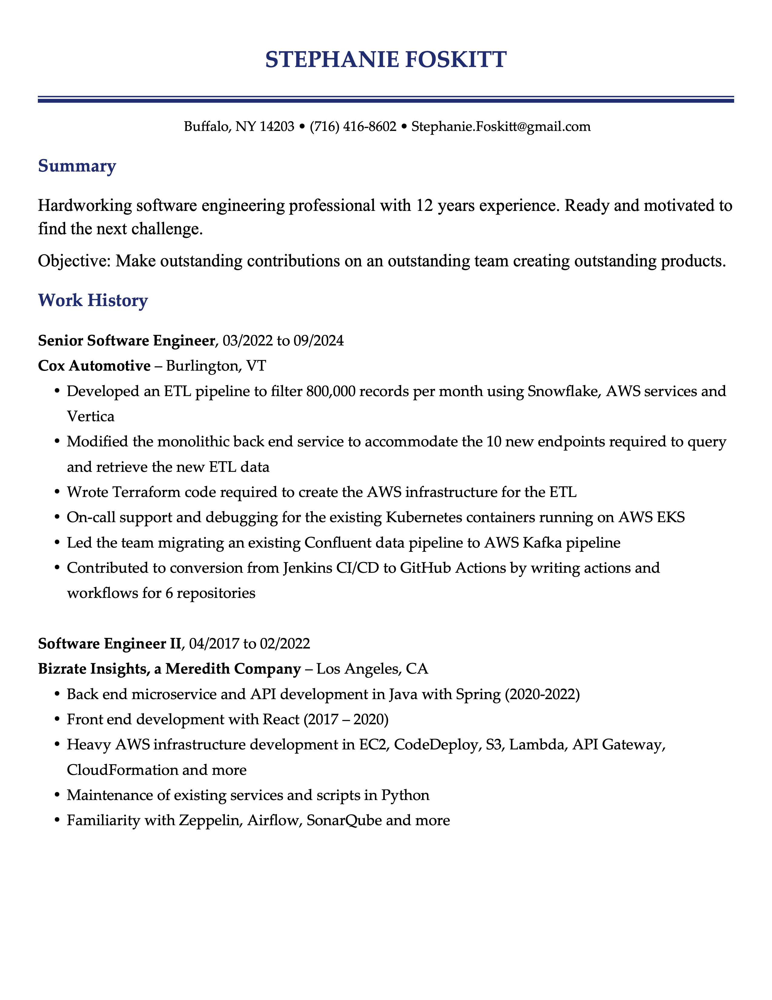
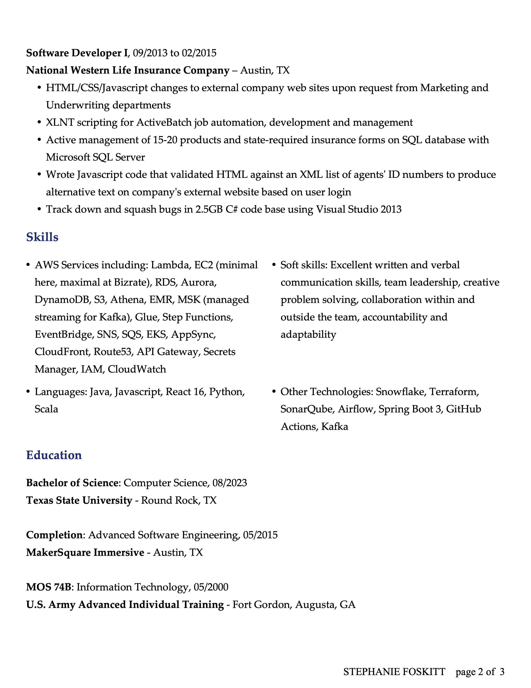

<!-- ---
layout: page
title: Posts
header: Posts
--- -->
<!-- {% include JB/setup %} -->

<!--Read [Jekyll Quick Start](http://jekyllbootstrap.com/usage/jekyll-quick-start.html)

Complete usage and documentation available at: [Jekyll Bootstrap](http://jekyllbootstrap.com)

## Update Author Attributes

In `_config.yml` remember to specify your own data:

    title : My Blog =)

    author :
      name : Name Lastname
      email : blah@email.test
      github : username
      twitter : username

The theme should reference these variables whenever needed.

## Sample Posts

This blog contains sample posts which help stage pages and blog data.
When you don't need the samples anymore just delete the `_posts/core-samples` folder.

    $ rm -rf _posts/core-samples
-->

<!-- {% assign posts_collate = site.posts %}
{% include JB/posts_collate %} -->


